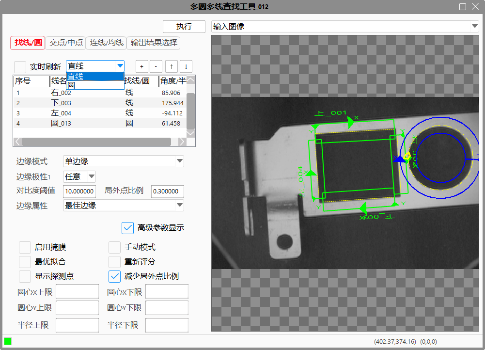
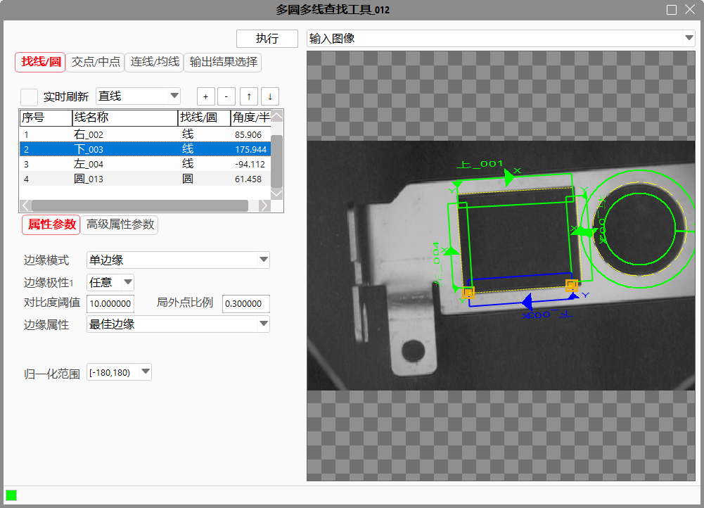
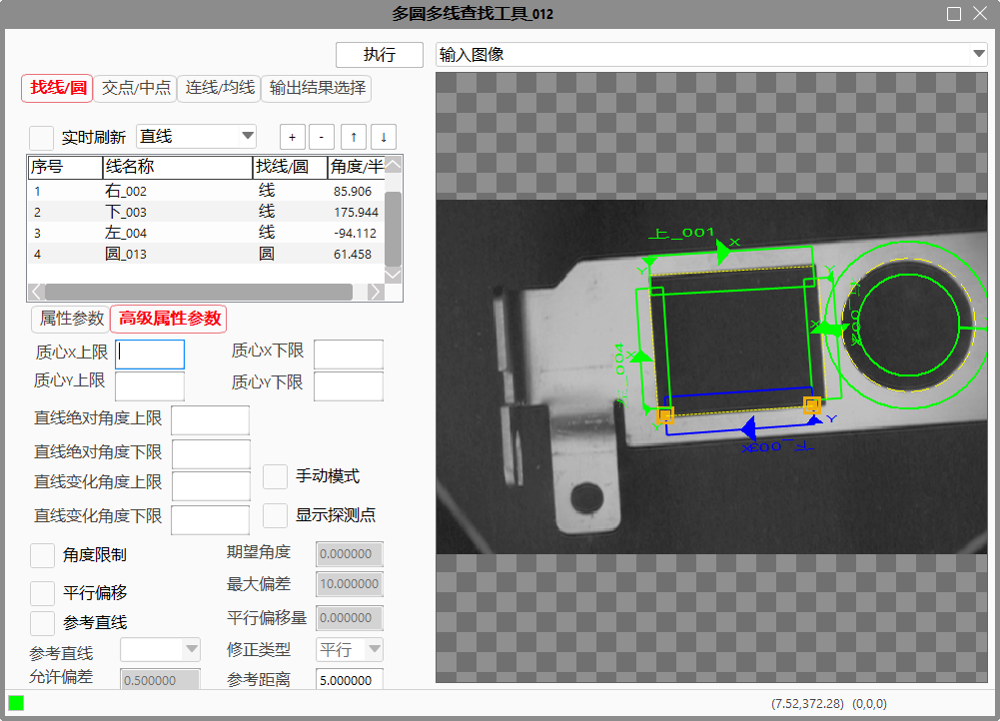
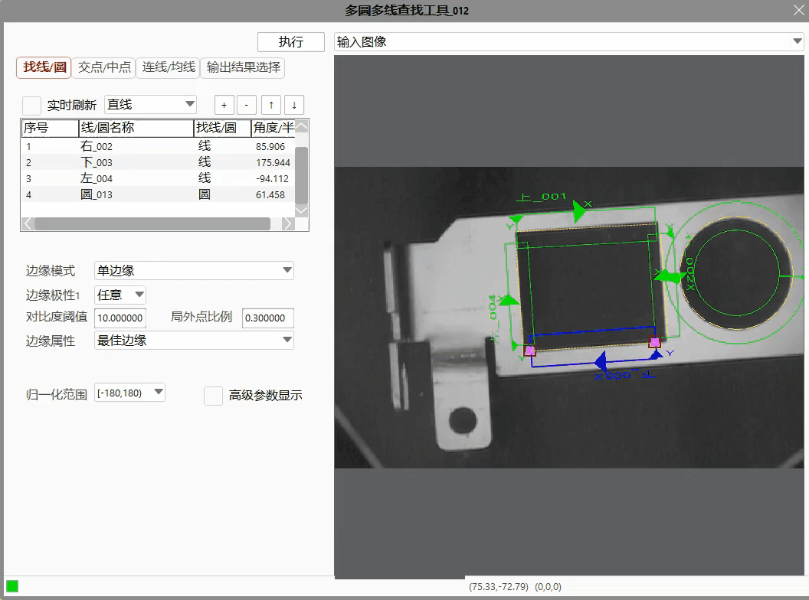
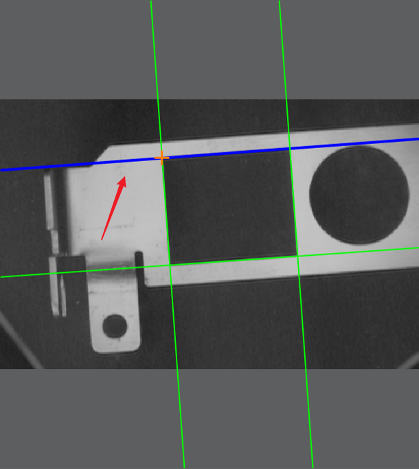

Tìm Đường/Hình Tròn

Trang này thay thế cho các công cụ tìm đường và tìm hình tròn truyền thống. Người dùng có thể chuyển đổi giữa lựa chọn Đường Thẳng/Hình Tròn bằng hộp chọn, sau đó nhấn vào dấu “+” để thêm một công cụ con tương ứng. Sau đó, kéo thước đo vào vị trí cần kiểm tra trên ảnh để tạo công cụ con mới, và tải thông số mặc định. Nếu người dùng muốn cấu hình thông số tùy chỉnh, hãy chọn công cụ tương ứng và chuyển đến giao diện thông số của công cụ đó để chỉnh sửa, như hình dưới:


“Làm mới theo thời gian thực”: Sau khi thay đổi thông số, nếu muốn xem kết quả ngay trên ảnh đầu vào, có thể chọn tùy chọn “Làm mới theo thời gian thực”. Nếu không chọn, sau khi chỉnh sửa thông số, cần bấm “Thực thi” để làm mới kết quả. Lưu ý: nếu có quá nhiều công cụ con, bật làm mới theo thời gian thực có thể gây hiện tượng chậm, nên sử dụng thận trọng; đồng thời, người dùng có thể sử dụng phím ↑↓ để điều chỉnh thứ tự thực thi của các mục, như hình minh họa dưới đây:

Giao Diện Thiết Lập Giao Điểm/Trung Điểm
Trang này tích hợp công cụ tìm giao điểm giữa đường/hình tròn và công cụ tạo trung điểm. Các chức năng trên trang mặc định sẽ tắt, người dùng cần bật theo nhu cầu.
Quy tắc thao tác với giao điểm:
- Có thể thêm giao điểm giữa đường–đường, đường–hình tròn, hình tròn–hình tròn.
- Không được thêm các giao điểm trùng lặp (tức điểm có cùng nguồn gốc).
- Khi sửa đổi mối quan hệ giữa đường/hình tròn hoặc giao điểm làm tăng số lượng giao điểm, hệ thống sẽ thêm điểm mới; nếu giảm số lượng, các điểm bị loại sẽ trở thành điểm không hợp lệ.
- Xóa một giao điểm sẽ đồng thời xóa cả các điểm có cùng nguồn.
Dùng để tính giao điểm giữa đường–đường, đường–hình tròn, hình tròn–hình tròn. Thực hiện theo các bước sau để thao tác:
Bước 1 Bật hạng mục kiểm tra tương ứng và nhấn dấu “＋”;
Bước 2 Nhấp vào mục đầu vào thứ nhất trong cửa sổ hình ảnh;
Bước 3 Nhấp vào mục đầu vào thứ hai trong cửa sổ hình ảnh;

Bước 4 Công cụ sẽ tự động tạo mục đầu ra tương ứng, nhấp đúp chuột để đổi tên nếu cần;